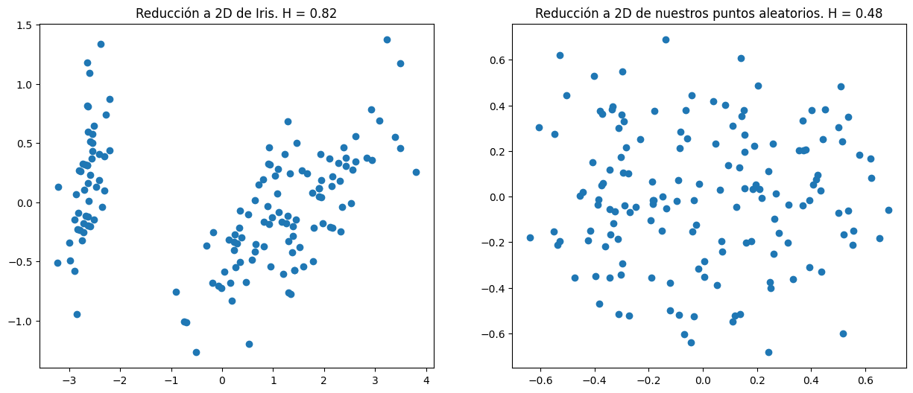
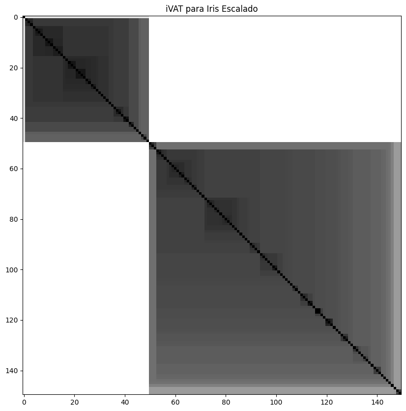

import numpy as np
import pandas as pd
from pyclustertend import vat, hopkins, ivat
import seaborn as sns
from sklearn.preprocessing import StandardScaler
from sklearn import set_config
np.random.seed(0)
set_config(transform_output="pandas")
X = sns.load_dataset("iris").drop(columns="species")
X_random = np.random.rand(150, 4)Evaluación de Clusters
Evaluación de Clusters
Visualización de ambos Datasets
!pip install pyclustertendRequirement already satisfied: pyclustertend in /home/datacuber/miniconda3/lib/python3.9/site-packages (1.8.2)
Requirement already satisfied: scikit-learn<2.0.0,>=1.1.2 in /home/datacuber/miniconda3/lib/python3.9/site-packages (from pyclustertend) (1.4.1.post1)
Requirement already satisfied: numba<0.55.0,>=0.54.1 in /home/datacuber/miniconda3/lib/python3.9/site-packages (from pyclustertend) (0.54.1)
Requirement already satisfied: matplotlib<4.0.0,>=3.3.3 in /home/datacuber/miniconda3/lib/python3.9/site-packages (from pyclustertend) (3.7.5)
Requirement already satisfied: numpy==1.20.3 in /home/datacuber/miniconda3/lib/python3.9/site-packages (from pyclustertend) (1.20.3)
Requirement already satisfied: pandas<2.0.0,>=1.2.0 in /home/datacuber/miniconda3/lib/python3.9/site-packages (from pyclustertend) (1.5.3)
Requirement already satisfied: pillow>=6.2.0 in /home/datacuber/miniconda3/lib/python3.9/site-packages (from matplotlib<4.0.0,>=3.3.3->pyclustertend) (9.2.0)
Requirement already satisfied: packaging>=20.0 in /home/datacuber/miniconda3/lib/python3.9/site-packages (from matplotlib<4.0.0,>=3.3.3->pyclustertend) (23.0)
Requirement already satisfied: pyparsing>=2.3.1 in /home/datacuber/miniconda3/lib/python3.9/site-packages (from matplotlib<4.0.0,>=3.3.3->pyclustertend) (3.0.9)
Requirement already satisfied: cycler>=0.10 in /home/datacuber/miniconda3/lib/python3.9/site-packages (from matplotlib<4.0.0,>=3.3.3->pyclustertend) (0.11.0)
Requirement already satisfied: contourpy>=1.0.1 in /home/datacuber/miniconda3/lib/python3.9/site-packages (from matplotlib<4.0.0,>=3.3.3->pyclustertend) (1.2.0)
Requirement already satisfied: importlib-resources>=3.2.0 in /home/datacuber/miniconda3/lib/python3.9/site-packages (from matplotlib<4.0.0,>=3.3.3->pyclustertend) (6.4.0)
Requirement already satisfied: python-dateutil>=2.7 in /home/datacuber/miniconda3/lib/python3.9/site-packages (from matplotlib<4.0.0,>=3.3.3->pyclustertend) (2.8.2)
Requirement already satisfied: fonttools>=4.22.0 in /home/datacuber/miniconda3/lib/python3.9/site-packages (from matplotlib<4.0.0,>=3.3.3->pyclustertend) (4.37.0)
Requirement already satisfied: kiwisolver>=1.0.1 in /home/datacuber/miniconda3/lib/python3.9/site-packages (from matplotlib<4.0.0,>=3.3.3->pyclustertend) (1.4.4)
Requirement already satisfied: setuptools in /home/datacuber/miniconda3/lib/python3.9/site-packages (from numba<0.55.0,>=0.54.1->pyclustertend) (67.5.1)
Requirement already satisfied: llvmlite<0.38,>=0.37.0rc1 in /home/datacuber/miniconda3/lib/python3.9/site-packages (from numba<0.55.0,>=0.54.1->pyclustertend) (0.37.0)
Requirement already satisfied: pytz>=2020.1 in /home/datacuber/miniconda3/lib/python3.9/site-packages (from pandas<2.0.0,>=1.2.0->pyclustertend) (2022.2.1)
Requirement already satisfied: threadpoolctl>=2.0.0 in /home/datacuber/miniconda3/lib/python3.9/site-packages (from scikit-learn<2.0.0,>=1.1.2->pyclustertend) (3.1.0)
Requirement already satisfied: scipy>=1.6.0 in /home/datacuber/miniconda3/lib/python3.9/site-packages (from scikit-learn<2.0.0,>=1.1.2->pyclustertend) (1.10.1)
Requirement already satisfied: joblib>=1.2.0 in /home/datacuber/miniconda3/lib/python3.9/site-packages (from scikit-learn<2.0.0,>=1.1.2->pyclustertend) (1.3.2)
Requirement already satisfied: zipp>=3.1.0 in /home/datacuber/miniconda3/lib/python3.9/site-packages (from importlib-resources>=3.2.0->matplotlib<4.0.0,>=3.3.3->pyclustertend) (3.11.0)
Requirement already satisfied: six>=1.5 in /home/datacuber/miniconda3/lib/python3.9/site-packages (from python-dateutil>=2.7->matplotlib<4.0.0,>=3.3.3->pyclustertend) (1.16.0)from sklearn.decomposition import PCA
import matplotlib.pyplot as plt
pca = PCA(n_components=2)
pca_X = pca.fit_transform(X)
pca = PCA(n_components=2)
pca_random = pca.fit_transform(X_random)
def compute_hopkins(X, p):
h_s = 1 - hopkins(X, p)
print(f"Hopskins para p={p} es: {h_s}")
return h_s
hs_X = compute_hopkins(X, p=50)
hs_random = compute_hopkins(X_random, p=50)
fig, ax = plt.subplot_mosaic([["iris", "random"]], figsize=(15, 6))
ax["iris"].scatter(pca_X["pca0"], pca_X["pca1"])
ax["random"].scatter(pca_random["pca0"], pca_random["pca1"])
ax["random"].set_title(
f"Reducción a 2D de nuestros puntos aleatorios. H = {hs_random:.2f}"
)
ax["iris"].set_title(f"Reducción a 2D de Iris. H = {hs_X:.2f}")
plt.show()Hopskins para p=50 es: 0.8241582644992403
Hopskins para p=50 es: 0.48048319214476964
Escalemos Iris
sc = StandardScaler()
X_sc = sc.fit_transform(X)
X_sc| sepal_length | sepal_width | petal_length | petal_width | |
|---|---|---|---|---|
| 0 | -0.900681 | 1.019004 | -1.340227 | -1.315444 |
| 1 | -1.143017 | -0.131979 | -1.340227 | -1.315444 |
| 2 | -1.385353 | 0.328414 | -1.397064 | -1.315444 |
| 3 | -1.506521 | 0.098217 | -1.283389 | -1.315444 |
| 4 | -1.021849 | 1.249201 | -1.340227 | -1.315444 |
| ... | ... | ... | ... | ... |
| 145 | 1.038005 | -0.131979 | 0.819596 | 1.448832 |
| 146 | 0.553333 | -1.282963 | 0.705921 | 0.922303 |
| 147 | 0.795669 | -0.131979 | 0.819596 | 1.053935 |
| 148 | 0.432165 | 0.788808 | 0.933271 | 1.448832 |
| 149 | 0.068662 | -0.131979 | 0.762758 | 0.790671 |
150 rows × 4 columns
VAT: Iris
import matplotlib.pyplot as plt
vat(X_sc)
plt.title("VAT para Iris Escalado")
ivat(X_sc)
plt.title("iVAT para Iris Escalado")Text(0.5, 1.0, 'iVAT para Iris Escalado')

VAT: Random
vat(X_random)
plt.title("VAT para Dataset Random")
ivat(X_random)
plt.title("iVAT para Dataset Random")Text(0.5, 1.0, 'iVAT para Dataset Random')
Correlación
from sklearn.cluster import KMeans
from scipy.spatial import distance_matrix
km = KMeans(n_clusters=2, n_init=10, random_state=1)
labels = km.fit_predict(X_sc)
def cluster_correlation(X, labels, p=2):
"""p corresponde al nivel de la distancia de Minkowski"""
ideal_sim = (labels == labels.reshape(-1, 1)).astype(np.float32)
d_matrix = distance_matrix(X, X, p=p)
S = 1 / (d_matrix + 1)
return np.corrcoef(S.flatten(), ideal_sim.flatten()).min()
cluster_correlation(X_sc, labels)0.6856891998862197Cohesión y Separación
centers = km.cluster_centers_
def compute_clustering_metrics(X, labels, centers, is_df=True):
if is_df:
X = X.to_numpy()
sse = np.square(X - centers[labels]).sum()
count = np.bincount(labels)
ssb = (
np.square(X.mean(axis=0) - centers) * count.reshape(-1, 1)
).sum()
return sse, ssb
sse, ssb = compute_clustering_metrics(X_sc, labels, centers, is_df=True)
sse, ssb(222.36170496502297, 377.638295034977)Ejemplo de Clases
import matplotlib.pyplot as plt
import pandas as pd
from scipy.spatial import distance_matrix
df = pd.DataFrame(
dict(
x=[2, 3, 4, 8, 9, 10, 6, 7, 8],
y=[5, 4, 6, 3, 2, 5, 10, 8, 9],
c=[0, 0, 0, 1, 1, 1, 2, 2, 2],
)
)
d_matrix = distance_matrix(df[["x", "y"]], df[["x", "y"]], p=2)
plt.scatter(df.x, df.y, c=df.c, s=200, edgecolors="k")
df| x | y | c | |
|---|---|---|---|
| 0 | 2 | 5 | 0 |
| 1 | 3 | 4 | 0 |
| 2 | 4 | 6 | 0 |
| 3 | 8 | 3 | 1 |
| 4 | 9 | 2 | 1 |
| 5 | 10 | 5 | 1 |
| 6 | 6 | 10 | 2 |
| 7 | 7 | 8 | 2 |
| 8 | 8 | 9 | 2 |
from sklearn.metrics import silhouette_score
silhouette_score(df[["x", "y"]], df.c)0.614855027897113## Esta función se hizo sólo para mostrar los pasos intermedios
## Usen esta función para revisar sus resultados cuando estudien para la prueba.
def silhouette_score_m(d_matrix, clust_labels):
n_clusters = len(np.unique(clust_labels))
clusters = clust_labels
idx_cohesion = clusters == np.arange(n_clusters).reshape(-1, 1)
a = np.zeros_like(clusters, dtype=np.float32)
bj = np.zeros((len(clusters), n_clusters))
for i, (row, c) in enumerate(zip(d_matrix, clusters)):
val = row[idx_cohesion[c] & (row != 0)]
a[i] = val.mean() if len(val) else 0
for cl in range(n_clusters):
if cl != c:
val = row[idx_cohesion[cl]]
bj[i, cl] = val.mean() if len(val) else 0
b = np.sort(bj, axis=1)[:, 1]
return a, b, bj, n_clustersa, b, bj, n_clusters = silhouette_score_m(d_matrix, df.c.values)
def create_table_for_silhouette(a, b, bj, n_clusters):
s_score = (b - a) / np.max((a, b), axis=0)
columns = (
["a"] + ["b" + str(i) for i in range(n_clusters)] + ["b", "s"]
)
s_table = pd.DataFrame(
np.hstack(
[
a.reshape(-1, 1),
bj,
b.reshape(-1, 1),
s_score.reshape(-1, 1),
]
),
columns=columns,
)
return s_table
s_score_table = create_table_for_silhouette(a, b, bj, n_clusters)
s_score_table["s"].mean()0.6148550289904339Ejemplo del PPT
df = pd.DataFrame(dict(x=[1, 2, 3, 5], c=[0, 0, 1, 1]))
d_matrix = distance_matrix(df[["x"]], df[["x"]], p=1)
a, b, bj, n_clusters = silhouette_score_m(d_matrix, df.c.values)
output = create_table_for_silhouette(a, b, bj, n_clusters)output.s.mean()0.3363095238095238Silhouette Curve
import scikitplot as skplt
skplt.metrics.plot_silhouette(X_sc, labels)
plt.show()